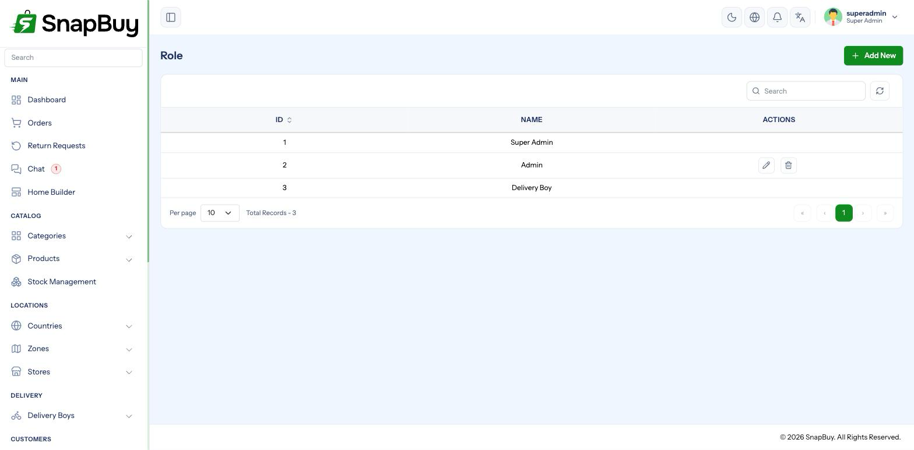
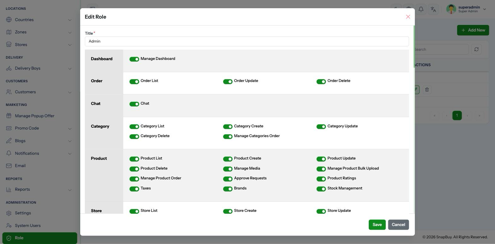
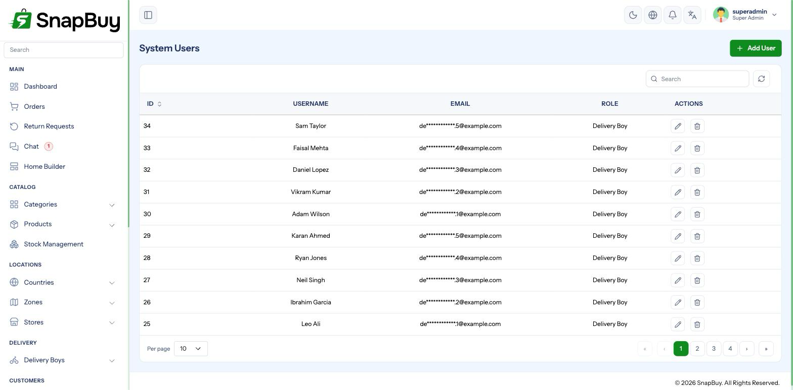

Roles & Permissions
Menu paths: Role and System Users
SnapBuy uses role-based access control. A role is a bundle of permissions; a staff user is assigned one role and sees only what it allows.

The seeded roles
Installation creates three:
| Role | Purpose |
|---|---|
| Super Admin | Every permission. Created by the installer as your account. |
| Admin | Broad management access |
| Delivery Boy | The rider's own portal — not a panel administrator |
Protect the Super Admin account
It can read your live payment gateway secrets, change prices, and delete records. Use a strong unique password, and never share the login between people — the activity log can only tell you which account acted, so a shared account destroys accountability.
How permissions work
Permissions are grouped by area of the panel — orders, products, customers, delivery boys, reports, settings and so on. Most areas offer four separate actions:
| Action | Allows |
|---|---|
| List | Seeing the menu and viewing records |
| Create | Adding new records |
| Update | Editing existing records |
| Delete | Removing records |
Granting List alone gives read-only access to that area — the right shape for an accountant or analyst who needs visibility but must not change anything.
The full set of areas is shown on the role form itself, grouped and labelled, so there is no need to memorise them.
Guard the Settings area hardest
The Settings permission covers payment gateway credentials, SMTP passwords, Firebase keys and SMS gateway tokens — all readable in plain form by anyone who has it.
Grant it only to people you would trust with your bank login. A warehouse supervisor who needs stock access does not need Settings.
Creating a role
Role → Add Role, name it, then tick the permissions.

Suggested role designs
| Role | Grant | Withhold |
|---|---|---|
| Store Manager | order, product, category, store, return_request, chat, report (list) | settings, countries, delivery_boy payouts |
| Catalogue Staff | product, category (list/create/update) | delete, order, settings, customer |
| Support Agent | order (list/update), customer (list), chat, return_request | settings, product, report |
| Accountant | report, order (list), customer (list), withdrawal_request (list) | everything create/update/delete |
| Marketing | promo_code, home_builder, send_notification, blogs, popup_offer | settings, order, customer, product |
Start narrow and widen on request
It is far easier to add a permission when someone asks than to discover months later that a role could delete products all along. Build the minimum, then respond to real needs.
Creating staff users
System Users → Add User: username, email, password, and the role.

Every staff member gets their own account
Sharing one login makes the activity log useless and means you cannot revoke one person's access without changing everyone's password.
Password reset needs working SMTP
Staff who forget their password recover by email. If SMTP is not configured, there is no in-panel recovery path — it takes direct database access. Configure SMTP before you create staff accounts.
When someone leaves
Deactivate the account the same day
Revoke access immediately, and rotate any shared credentials that person could read — particularly payment gateway keys and SMTP passwords if they had settings. Their knowledge of those secrets does not expire with their account.
Deactivate rather than delete, so their history in the activity log stays attributable.
The Delivery Boy role is different
The Delivery Boy role is not a panel administrator. Riders sign in at /delivery_boy/login and get their own portal — orders, cash collection, settlements, chat. See Delivery Boy Portal.
Do not grant admin permissions to the delivery boy role
It changes what riders see in their own app, and can expose customer or financial data on a device that is frequently lost or shared.
Troubleshooting
| Symptom | Cause | Fix |
|---|---|---|
| Menu item missing for a staff member | Role lacks that list permission | Grant it |
| "Unauthorized" on save | Has list but not update | Grant update |
| Permission changes not taking effect | Cached permissions | Visit /clear; have the user sign out and back in |
| Staff can see payment credentials | Role has settings | Remove it |
| Cannot tell who made a change | Shared account | Give each person their own |
| Permission list looks incomplete | Seeder not fully run | Re-run the permission seeders after a backup |
Checklist
- Super Admin password strong and not shared
-
settingsgranted to as few roles as possible - Read-only roles built from
listpermissions - One account per person
- SMTP working, so password reset is possible
- Leavers deactivated and secrets rotated